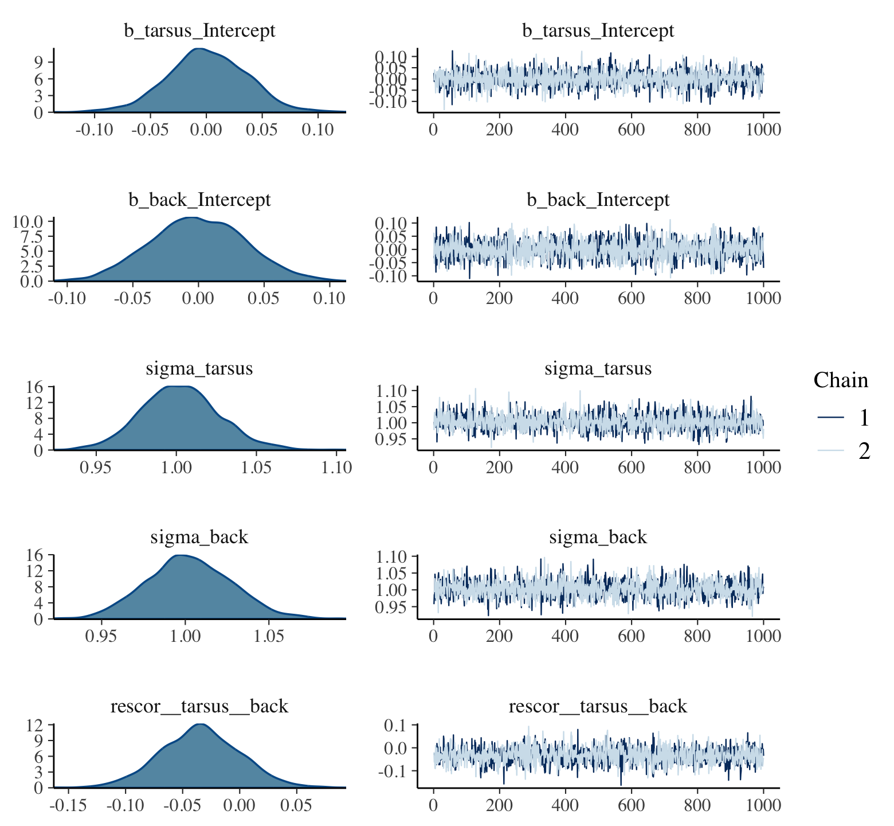

17 Horoscopes Insights
Statistical inference is indeed critically important. But only as much as every other part of research. Scientific discovery is not an additive process, in which sin in one part can be atoned by virtue in another. Everything interacts. So equally when science works as intended as when it does not, every part of the process deserves attention. (McElreath, 2020a, p. 553)
In this final chapter, there are no models for us to fit and no figures for use to reimagine. McElreath took the opportunity to comment more broadly on the scientific process. He made a handful of great points, some of which I’ll quote in a bit. But for the bulk of this chapter, I’d like to take the opportunity to pass on a few of my own insights about workflow. I hope they’re of use.
17.1 Use R Notebooks
OMG
I first started using R in the winter of 2015/2016. Right from the start, I learned how to code from within the RStudio environment. But within RStudio I was using simple scripts. No longer. I now use R Notebooks for just about everything, including my scientific projects, this bookdown-powered ebook, and even my academic webpage and blog. Nathan Stephens wrote a nice blog post, Why I love R Notebooks. I agree. This has fundamentally changed my workflow as a scientist. I only wish I’d learned about this before starting my dissertation project. So it goes…
Do yourself a favor, adopt R Notebooks into your workflow. Do it today. If you prefer to learn with videos, here’s a nice intro by Kristine Yu and another one by JJ Allaire. Try it out for like one afternoon and you’ll be hooked.
17.2 Save your model fits
It’s embarrassing how long it took for this to dawn on me.
Unlike classical statistics, Bayesian models using MCMC take a while to compute. Most of the simple models in McElreath’s text take 30 seconds up to a couple minutes. If your data are small, well-behaved and of a simple structure, you might have a lot of wait times in that range in your future.
It hasn’t been that way, for me.
Most of my data have a complicated multilevel structure and often aren’t very well behaved. It’s normal for my models to take an hour or several to fit. Once you start measuring your model fit times in hours, you do not want to fit these things more than once. So, it’s not enough to document my code in a nice R Notebook file. I need to save my brm() fit objects in external files.
Consider this model. It’s taken from Bürkner’s (2022d) vignette, Estimating multivariate models with brms. It took about three minutes for my personal laptop to fit.
library(brms)
data("BTdata", package = "MCMCglmm")b17.1 <-
brm(data = BTdata,
family = gaussian,
bf(mvbind(tarsus, back) ~ sex + hatchdate + (1 | p | fosternest) + (1 | q | dam)) +
set_rescor(TRUE),
chains = 2, cores = 2,
seed = 17)Three minutes isn’t terribly long to wait, but still. I’d prefer to never have to wait for another three minutes, again. Sure, if I save my code in a document like this, I will always be able to fit the model again. But I can work smarter. Here I’ll save my b17.1 object outside of R with the save() function.
save(b17.1, file = "fits/b17.01.rda")Hopefully y’all are savvy Bayesian R users and find this insultingly remedial. But if it’s new to you like it was me, you can learn more about .rda files here.
Now b17.1 is saved outside of R, I can safely remove it and then reload it.
rm(b17.1)
load("fits/b17.01.rda")The file took a fraction of a second to reload. Once reloaded, I can perform typical operations, like examine summaries of the model parameters or refreshing my memory on what data I used.
print(b17.1)## Family: MV(gaussian, gaussian)
## Links: mu = identity; sigma = identity
## mu = identity; sigma = identity
## Formula: tarsus ~ sex + hatchdate + (1 | p | fosternest) + (1 | q | dam)
## back ~ sex + hatchdate + (1 | p | fosternest) + (1 | q | dam)
## Data: BTdata (Number of observations: 828)
## Draws: 2 chains, each with iter = 2000; warmup = 1000; thin = 1;
## total post-warmup draws = 2000
##
## Group-Level Effects:
## ~dam (Number of levels: 106)
## Estimate Est.Error l-95% CI u-95% CI Rhat Bulk_ESS Tail_ESS
## sd(tarsus_Intercept) 0.48 0.05 0.39 0.59 1.01 628 1021
## sd(back_Intercept) 0.25 0.07 0.09 0.39 1.01 226 433
## cor(tarsus_Intercept,back_Intercept) -0.51 0.22 -0.92 -0.05 1.00 450 688
##
## ~fosternest (Number of levels: 104)
## Estimate Est.Error l-95% CI u-95% CI Rhat Bulk_ESS Tail_ESS
## sd(tarsus_Intercept) 0.27 0.05 0.16 0.37 1.00 703 1076
## sd(back_Intercept) 0.35 0.06 0.24 0.47 1.01 345 678
## cor(tarsus_Intercept,back_Intercept) 0.69 0.21 0.23 0.98 1.01 195 422
##
## Population-Level Effects:
## Estimate Est.Error l-95% CI u-95% CI Rhat Bulk_ESS Tail_ESS
## tarsus_Intercept -0.41 0.07 -0.54 -0.28 1.00 1294 1529
## back_Intercept -0.01 0.07 -0.14 0.12 1.00 1927 1640
## tarsus_sexMale 0.77 0.06 0.66 0.88 1.00 3718 1611
## tarsus_sexUNK 0.23 0.13 -0.02 0.47 1.00 4256 1256
## tarsus_hatchdate -0.04 0.06 -0.16 0.08 1.00 1135 1370
## back_sexMale 0.01 0.07 -0.12 0.14 1.00 5228 1435
## back_sexUNK 0.15 0.15 -0.14 0.44 1.00 4060 1577
## back_hatchdate -0.09 0.05 -0.19 0.01 1.00 1783 1399
##
## Family Specific Parameters:
## Estimate Est.Error l-95% CI u-95% CI Rhat Bulk_ESS Tail_ESS
## sigma_tarsus 0.76 0.02 0.72 0.80 1.00 2286 1478
## sigma_back 0.90 0.02 0.86 0.95 1.00 1516 1378
##
## Residual Correlations:
## Estimate Est.Error l-95% CI u-95% CI Rhat Bulk_ESS Tail_ESS
## rescor(tarsus,back) -0.05 0.04 -0.13 0.02 1.00 2751 1615
##
## Draws were sampled using sampling(NUTS). For each parameter, Bulk_ESS
## and Tail_ESS are effective sample size measures, and Rhat is the potential
## scale reduction factor on split chains (at convergence, Rhat = 1).head(b17.1$data)## tarsus sex hatchdate fosternest dam back
## 1 -1.89229718 Fem -0.6874021 F2102 R187557 1.1464212
## 2 1.13610981 Male -0.6874021 F1902 R187559 -0.7596521
## 3 0.98468946 Male -0.4279814 A602 R187568 0.1449373
## 4 0.37900806 Male -1.4656641 A1302 R187518 0.2555847
## 5 -0.07525299 Fem -1.4656641 A2602 R187528 -0.3006992
## 6 -1.13519543 Fem 0.3502805 C2302 R187945 1.5577219The other option, which we’ve been using extensively throughout the earlier chapters, is to use file argument within the brms::brm() function. You can read about the origins of the argument in issue #472 on the brms GitHub repo. To make use of the file argument, specify a character string. brm() will then save your fitted model object in an external .rds file via the saveRDS() function. Let’s give it a whirl, this time with an interaction.
b17.2 <-
brm(data = BTdata,
family = gaussian,
bf(mvbind(tarsus, back) ~ sex * hatchdate + (1 | p | fosternest) + (1 | q | dam)) +
set_rescor(TRUE),
chains = 2, cores = 2,
seed = 17,
file = "fits/b17.02")Now b17.2 is saved outside of R, I can safely remove it and then reload it.
rm(b17.2)We might load b17.2 with the readRDS() function.
b17.2 <- readRDS("fits/b17.02.rds")Now we can work with b17.2 as desired.
fixef(b17.2)## Estimate Est.Error Q2.5 Q97.5
## tarsus_Intercept -0.40671261 0.07008777 -0.5470010 -0.27163003
## back_Intercept -0.01131333 0.06397809 -0.1352017 0.11088241
## tarsus_sexMale 0.76988443 0.05760594 0.6590652 0.88341331
## tarsus_sexUNK 0.18998102 0.14782444 -0.1001478 0.47197612
## tarsus_hatchdate -0.05316912 0.06737082 -0.1870366 0.07343716
## tarsus_sexMale:hatchdate 0.01169482 0.05815626 -0.1010112 0.12243406
## tarsus_sexUNK:hatchdate 0.06473711 0.12019755 -0.1620488 0.29951633
## back_sexMale 0.00715757 0.06772201 -0.1220377 0.13861985
## back_sexUNK 0.15272222 0.17589963 -0.1977150 0.49646947
## back_hatchdate -0.04869634 0.06607839 -0.1792265 0.08336856
## back_sexMale:hatchdate -0.08003104 0.06974893 -0.2151977 0.05955340
## back_sexUNK:hatchdate -0.04123281 0.14008404 -0.3111807 0.24315779The file method has another handy feature. Let’s remove b17.2 one more time to see.
rm(b17.2)If you’ve fit a brm() model once and saved the results with file, executing the same brm() code will not re-fit the model. Rather, it will just load and return the model from the .rds file.
b17.2 <-
brm(data = BTdata,
family = gaussian,
bf(mvbind(tarsus, back) ~ sex * hatchdate + (1 | p | fosternest) + (1 | q | dam)) +
set_rescor(TRUE),
chains = 2, cores = 2,
seed = 15,
file = "fits/b17.02")It takes just a fraction of a second. Once again, we’re ready to work with b17.2.
b17.2$formula## tarsus ~ sex * hatchdate + (1 | p | fosternest) + (1 | q | dam)
## back ~ sex * hatchdate + (1 | p | fosternest) + (1 | q | dam)And if you’d like to remind yourself what the name of that external file was or what folder you saved it in, you can extract it from the brm() fit object.
b17.2$file## [1] "fits/b17.02.rds"Also, see Gavin Simpson’s blog post, A better way of saving and loading objects in R, for a discussion on the distinction between .rda and .rds files.
17.3 Build your models slowly
The model from Bürkner’s vignette, b17.1, was no joke. If you wanted to be verbose about it, it was a multilevel, multivariate, multivariable model. It had a cross-classified multilevel structure, two predictors (for each criterion), and two criteria. Not only is that a lot to keep track of, there’s a whole lot of places for things to go wrong.
Even if that was the final model I was interested in as a scientist, I still wouldn’t start with it. I’d build up incrementally, just to make sure nothing looked fishy. One place to start would be a simple intercepts-only model.
b17.0 <-
brm(data = BTdata,
family = gaussian,
bf(mvbind(tarsus, back) ~ 1) + set_rescor(TRUE),
chains = 2, cores = 2,
file = "fits/b17.00")plot(b17.0, widths = c(2, 3))
print(b17.0)## Family: MV(gaussian, gaussian)
## Links: mu = identity; sigma = identity
## mu = identity; sigma = identity
## Formula: tarsus ~ 1
## back ~ 1
## Data: BTdata (Number of observations: 828)
## Draws: 2 chains, each with iter = 2000; warmup = 1000; thin = 1;
## total post-warmup draws = 2000
##
## Population-Level Effects:
## Estimate Est.Error l-95% CI u-95% CI Rhat Bulk_ESS Tail_ESS
## tarsus_Intercept 0.00 0.04 -0.07 0.07 1.00 2628 1750
## back_Intercept -0.00 0.04 -0.07 0.07 1.00 2729 1433
##
## Family Specific Parameters:
## Estimate Est.Error l-95% CI u-95% CI Rhat Bulk_ESS Tail_ESS
## sigma_tarsus 1.00 0.02 0.96 1.05 1.00 2225 1369
## sigma_back 1.00 0.03 0.96 1.05 1.00 2222 1560
##
## Residual Correlations:
## Estimate Est.Error l-95% CI u-95% CI Rhat Bulk_ESS Tail_ESS
## rescor(tarsus,back) -0.03 0.04 -0.10 0.04 1.00 2010 1349
##
## Draws were sampled using sampling(NUTS). For each parameter, Bulk_ESS
## and Tail_ESS are effective sample size measures, and Rhat is the potential
## scale reduction factor on split chains (at convergence, Rhat = 1).If the chains look good and the summary statistics are about what I’d expect, I’m on good footing to keep building up to the model I really care about. The results from this model, for example, suggest that both criteria were standardized (i.e., intercepts at 0 and \(\sigma\)’s at 1). If that wasn’t what I intended, I’d rather catch it here than spend several minutes fitting the more complicated b17.1 model, the parameters for which are sufficiently complicated that I may have had trouble telling what scale the data were on.
Note, this is not the same as \(p\)-hacking (Simmons et al., 2011) or wandering aimlessly down the garden of forking paths (Gelman & Loken, 2013). We are not chasing the flashiest model to put in a paper. Rather, this is just good pragmatic data science. If you start off with a theoretically-justified but complicated model and run into computation problems or produce odd-looking estimates, it won’t be clear where things went awry. When you build up, step by step, it’s easier to catch data cleaning failures, coding goofs and the like.
So, when I’m working on a project, I fit one or a few simplified models before fitting my complicated model of theoretical interest. This is especially the case when I’m working with model types that are new to me or that I haven’t worked with in a while. I document each step in my R Notebook files and I save the fit objects for each in external files. I have caught surprises this way. Hopefully this will help you catch your mistakes, too.
17.4 Look at your data
Relatedly, and perhaps even a precursor, you should always plot your data before fitting a model. There were plenty examples of this in the text, but it’s worth it making explicit. Simple summary statistics are great, but they’re not enough. For an entertaining exposition, check out Matejka and Fitzmaurice’s (2017) Same stats, different graphs: Generating datasets with varied appearance and identical statistics through simulated annealing. Though it might make for a great cocktail party story, I’d hate to pollute the scientific literature with a linear model based on a set of dinosaur-shaped data.
17.5 Consider using the 0 + Intercept syntax
We covered this a little in the last couple chapters (e.g., Section 15.4.7, Section 16.4.3), but it’s easy to miss. If your real-world model has predictors (i.e., isn’t an intercept-only model), it’s important to keep track of how you have centered those predictors. When you specify a prior for a brms Intercept (i.e., an intercept resulting from the y ~ x or y ~ 1 + x style of syntax), that prior is applied under the presumption all the predictors are mean centered. In the Population-level (‘fixed’) effects subsection of the set_prior section of the brms reference manual (Bürkner, 2022i), we read:
Note that technically, this prior is set on an intercept that results when internally centering all population-level predictors around zero to improve sampling efficiency. On this centered intercept, specifying a prior is actually much easier and intuitive than on the original intercept, since the former represents the expected response value when all predictors are at their means. To treat the intercept as an ordinary population-level effect and avoid the centering parameterization, use
0 + Intercepton the right-hand side of the model formula.
We get a little more information from the Parameterization of the population-level intercept subsection of the brmsformula section:
This behavior can be avoided by using the reserved (and internally generated) variable Intercept. Instead of
y ~ x, you may writey ~ 0 + Intercept + x. This way, priors can be defined on the real intercept, directly. In addition, the intercept is just treated as an ordinary population-level effect and thus priors defined on b will also apply to it. Note that this parameterization may be less efficient than the default parameterization discussed above.
We didn’t bother using the 0 + Intercept syntax for most of our models because McElreath chose to emphasize mean-centered and standardized predictors in the second edition of his text. But this will not always be the case. Sometimes you might have a good reason not to center your predictors. In those cases, the 0 + Intercept syntax can make a difference. Regardless, do set your Intercept priors with care.
17.6 Annotate your workflow
In a typical model-fitting file, I’ll load my data, perhaps transform the data a bit, fit several models, and examine the output of each with trace plots, model summaries, information criteria, and the like. In my early days, I just figured each of these steps were self-explanatory.
Nope.
My experience was that even a couple weeks between taking a break from a project and restarting it was enough time to make my earlier files confusing. And they were my files. I now start each R Notebook document with an introductory paragraph or two explaining exactly what the purpose of the file is. I separate my major sections by headers and subheaders. My working R Notebook files are peppered with bullets, sentences, and full on paragraphs between code blocks.
17.7 Annotate your code
This idea is implicit in McElreath’s text, but it’s easy to miss the message. I know I did, at first. I find this is especially important for data wrangling. I’m a tidyverse guy and, for me, the big-money verbs like mutate(), pivot_longer(), select(), filter(), group_by(), and summarise() take care of the bulk of my data wrangling. But every once and a while I need to do something less common, like with str_extract() or case_when(). When I end up using a new or less familiar function, I typically annotate right in the code and even sometimes leave a hyperlink to some R-bloggers post or stackoverflow question that explained how to use it.
17.8 Break up your workflow
I’ve also learned to break up my projects into multiple R Notebook files. If you have a small project for which you just want a quick and dirty plot, fine, do it all in one file. My typical scientific projects have:
- a primary data cleaning file;
- a file with basic descriptive statistics and the like;
- at least one primary analysis file;
- possible secondary and tertiary analysis files;
- a file or two for my major figures; and
- a file explaining and depicting my priors, often accompanied by my posteriors, for comparison.
Putting all that information in one R Notebook file would be overwhelming. Your workflow might well look different, but hopefully you get the idea. You don’t want working files with thousands of lines of code.
To get a sense of what this can look like in practice, you might follow this link, https://osf.io/vekpf/, to the OSF project site for one of my conference presentations (Kurz et al., 2019) from the Before Times. In the wiki, I explained the contents of 10 files supporting the analyses we presented at the conference. Each of those 10 .html files has its origin in its own .Rmd file.
Mainly to keep Jenny Bryan from setting my computer on fire, I’m also in the habit of organizing interconnected project files with help from RStudio Projects. You can learn more about these from Chapter 8 in R4DS (Grolemund & Wickham, 2017). They might seem trivial, at first, but I’ve come to value the simple ways in which RStudio Projects help streamline my workflow.
17.9 Code in public
If you would like to improve the code you write for data-wrangling, modeling, and/or visualizing, code in public. Yes, it can be intimidating. Yes, you will probably make mistakes. If you’re lucky, others will point them out and you will revise and learn and grow. 🌱
You can do this on any number of mediums, such as
- GitHub (e.g., here),
- personal blogs (e.g., here),
- the Open Science Framework (e.g., here),
- online books (e.g., here),
- full-blown YouTube lectures (e.g., here), or even with
- brief Twitter GIFs (e.g., here).
I’ve found that just the possibility that others might look at my code makes it more likely I’ll slow down, annotate, and try to use more consistent formatting. Hopefully it will benefit you, too.
{kind=link}
17.12 But, like, how do I do this for real?
McElreath’s text and my ebook are designed to teach you how to get started doing applied Bayesian statistics. Neither does a great job teaching you how to write them up for a professional presentation, like a peer-reviewed journal article. What I will do, however, is give you some places to look. Just before releasing the 0.2.0 version of this ebook, I asked the good people on twitter to share their favorite examples of applied Bayesian statistics in the scientific literature.
What are your favorite **applied** articles using Bayesian statistics (via Stan, #brms, …)?
— Solomon Kurz (@SolomonKurz) March 15, 2021
I’m particularly interested in great walk-outs in Methods sections, Discussion sections, and supplemental materials.
At first, folks were a little shy, but eventually the crowd came through in spades! For a full list, feel free to peruse my tweet thread. For your convenience, here’s a list of a good bunch of the works people shared11:
- Allen et al. (2020, PDF link)
- Amlie-Lefond et al. (2020, PDF link)
- Casillas (2021, PDF link)
- Davis et al. (2020, PDF link)
- Girard et al. (2021, PDF link)
- Haines et al. (2018, PDF link)
- Kale et al. (2020, PDF link)
- Nogueira et al. (2018, PDF link)
- Ross et al. (2020, PDF link)
- Silbiger et al. (2019, PDF link)
At a quick glance, these papers cover a reasonably broad range of topics. I hope they give you a sense of how to write up your work.
17.13 Parting wisdom
Okay, that’s enough from me. Let’s start wrapping this project up with some McElreath.
There is an aspect of science that you do personally control: openness. Pre-plan your research together with the statistical analysis. Doing so will improve both the research design and the statistics. Document it in the form of a mock analysis that you would not be ashamed to share with a colleague. Register it publicly, perhaps in a simple repository, like Github or any other. But your webpage will do just fine, as well. Then collect the data. Then analyze the data as planned. If you must change the plan, that’s fine. But document the changes and justify them. Provide all of the data and scripts necessary to repeat your analysis. Do not provide scripts and data “on request,” but rather put them online so reviewers of your paper can access them without your interaction. There are of course cases in which full data cannot be released, due to privacy concerns. But the bulk of science is not of that sort.
The data and its analysis are the scientific product. The paper is just an advertisement. If you do your honest best to design, conduct, and document your research, so that others can build directly upon it, you can make a difference. (p. 555)
Toward that end, also check out the OSF and their YouTube channel, here. Katie Corker gets the last words: “Open science is stronger because we’re doing this together.”
Session info
sessionInfo()## R version 4.2.2 (2022-10-31)
## Platform: x86_64-apple-darwin17.0 (64-bit)
## Running under: macOS Big Sur ... 10.16
##
## Matrix products: default
## BLAS: /Library/Frameworks/R.framework/Versions/4.2/Resources/lib/libRblas.0.dylib
## LAPACK: /Library/Frameworks/R.framework/Versions/4.2/Resources/lib/libRlapack.dylib
##
## locale:
## [1] en_US.UTF-8/en_US.UTF-8/en_US.UTF-8/C/en_US.UTF-8/en_US.UTF-8
##
## attached base packages:
## [1] stats graphics grDevices utils datasets methods base
##
## other attached packages:
## [1] brms_2.18.0 Rcpp_1.0.9
##
## loaded via a namespace (and not attached):
## [1] TH.data_1.1-1 minqa_1.2.5 colorspace_2.0-3 ellipsis_0.3.2 rgdal_1.5-30
## [6] estimability_1.4.1 markdown_1.1 base64enc_0.1-3 rstudioapi_0.13 farver_2.1.1
## [11] rstan_2.21.8 DT_0.24 lubridate_1.8.0 fansi_1.0.3 mvtnorm_1.1-3
## [16] bridgesampling_1.1-2 codetools_0.2-18 splines_4.2.2 cachem_1.0.6 knitr_1.40
## [21] shinythemes_1.2.0 bayesplot_1.10.0 projpred_2.2.1 jsonlite_1.8.4 nloptr_2.0.3
## [26] shiny_1.7.2 httr_1.4.4 compiler_4.2.2 emmeans_1.8.0 backports_1.4.1
## [31] assertthat_0.2.1 Matrix_1.5-1 fastmap_1.1.0 cli_3.6.0 later_1.3.0
## [36] htmltools_0.5.3 prettyunits_1.1.1 tools_4.2.2 igraph_1.3.4 coda_0.19-4
## [41] gtable_0.3.1 glue_1.6.2 reshape2_1.4.4 dplyr_1.0.10 posterior_1.3.1
## [46] jquerylib_0.1.4 vctrs_0.5.1 nlme_3.1-160 crosstalk_1.2.0 tensorA_0.36.2
## [51] xfun_0.35 stringr_1.4.1 ps_1.7.2 lme4_1.1-31 mime_0.12
## [56] miniUI_0.1.1.1 lifecycle_1.0.3 gtools_3.9.4 MASS_7.3-58.1 zoo_1.8-10
## [61] scales_1.2.1 colourpicker_1.1.1 promises_1.2.0.1 Brobdingnag_1.2-8 parallel_4.2.2
## [66] sandwich_3.0-2 inline_0.3.19 shinystan_2.6.0 curl_4.3.2 gamm4_0.2-6
## [71] gridExtra_2.3 ggplot2_3.4.0 loo_2.5.1 StanHeaders_2.21.0-7 sass_0.4.2
## [76] tweetrmd_0.0.9 stringi_1.7.8 highr_0.9 dygraphs_1.1.1.6 checkmate_2.1.0
## [81] boot_1.3-28 pkgbuild_1.3.1 rlang_1.0.6 pkgconfig_2.0.3 matrixStats_0.63.0
## [86] distributional_0.3.1 evaluate_0.18 lattice_0.20-45 purrr_1.0.1 labeling_0.4.2
## [91] rstantools_2.2.0 htmlwidgets_1.5.4 processx_3.8.0 tidyselect_1.2.0 plyr_1.8.7
## [96] magrittr_2.0.3 bookdown_0.28 R6_2.5.1 generics_0.1.3 multcomp_1.4-20
## [101] DBI_1.1.3 withr_2.5.0 pillar_1.8.1 mgcv_1.8-41 xts_0.12.1
## [106] sp_1.5-0 survival_3.4-0 abind_1.4-5 tibble_3.1.8 crayon_1.5.2
## [111] utf8_1.2.2 rmarkdown_2.16 emo_0.0.0.9000 grid_4.2.2 callr_3.7.3
## [116] threejs_0.3.3 digest_0.6.31 xtable_1.8-4 httpuv_1.6.5 RcppParallel_5.1.5
## [121] stats4_4.2.2 munsell_0.5.0 bslib_0.4.0 shinyjs_2.1.0References
Since Elon Musk took over twitter in late 2022, academic twitter has become an odd place. Many have migrated to other platforms, and it’s not clear if those initial migrations will be permanent, or to what extent we’ll see folks return. But at the time of this writing (January 2023), I’m still on twitter and I hope to see you there, too.↩︎
This list is not exhaustive of the links people shared on twitter. My basic inclusion criteria were that they were (a) peer-reviewed articles (b) with a substantive focus that I could (c) easily find a PDF link for. When someone shared several of their works, I simply pulled the first one that fulfilled those criteria. Also, inclusion on this list is not a personal endorsement. I haven’t read most of them. You get what you pay for, friends.↩︎